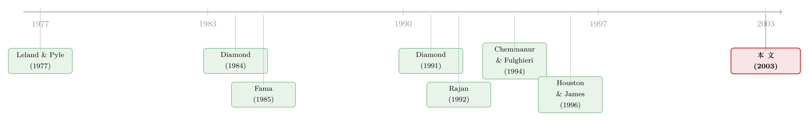

信用最差的公司，到底去哪儿借钱？
本文读的是 Denis & Mihov (2003, Journal of Financial Economics)：用 1995–1996 年 1,560 笔新发债务，作者把企业的借钱渠道拆成银行贷款、非银行私募债、公开债三类，发现决定渠道的首要变量是发行人的信用质量——信用最好的发公开债，中等的找银行，而信用最差的，去了一个长期被文献忽视的角落：非银行私募债（多为 Rule 144A）。
1 一个被理论算反了的问题
先抛一个看似简单、却让一代理论模型集体翻车的问题：一家信用质量最差、违约概率最高的公司，会去哪里借钱？
凭直觉，你大概会说「找银行」。因为银行擅长监督（monitoring）、擅长在出事时坐下来重新谈判，按理说越是风险高、信息越不透明的借款人，越需要这种贴身的关系型贷款。
但有意思的是，主流理论给出的答案恰恰相反。Diamond (1991) 和 Rajan (1992) 这两篇被引到烂的论文都预测：信用质量与借款渠道之间是一条非单调 (nonmonotonic) 的曲线——最高质量的公司发公开债，中等质量的找银行，而最差质量的公司……又回到了公开债。逻辑是：对烂公司而言，银行监督的成本超过了收益，于是它们「被挤出」银行体系，只能去公开市场。Berlin and Loyes (1988) 和 Chemmanur and Fulghieri (1994) 从「清算与重谈效率」出发，给出的也是同一个 U 形预测：评级最高和最低的两端都用公开债，中间档用银行贷款。
所以理论的共识是：信用谱系的两端，挤在了公开债市场。
这就是这篇论文要拆的那根弦。Denis 和 Mihov 想问：现实里真是这样吗？信用最差的公司，真的挤到公开债市场去了吗？
2 真正关键的一步：把「私募」一刀切成两半
要回答这个问题，先得意识到上面那些理论有一个共同的、几乎没人去碰的简化假设：它们把债务世界切成了「公开 vs 私募」两类。
可现实里的「私募债」根本不是铁板一块。它至少有两副完全不同的面孔：
- 一类是银行贷款 (bank debt)——关系型、贴身监督、期限短、随时可重谈。
- 另一类是非银行私募债 (non-bank private debt)——很大一部分走 SEC 的 Rule 144A 通道，直接卖给保险公司、养老金这类机构投资者，绕开了冗长的公开发行流程。
这第二类东西，Kwan and Carleton (1995) 形容它「持有集中、流动性差」，发行成本低于公开债，契约条款可以量身定制。换句话说，144A 私募债像一个混血儿：它有公开债「不让银行天天盯着你」的好处，又保留了私募债「持有人集中、出事好重谈」的好处。
于是真正关键的一步出现了——一旦你把「私募」拆成银行和非银行两块，那条被理论算反的曲线就有了第三个落点。Diamond (1991) 和 Rajan (1992) 说烂公司被银行挤出去，这没错；但被挤出去的公司未必去了公开市场，它们可能去了非银行私募债。理由很顺：
Rule 144A 的发行人能避开银行日复一日的影响，也就避开了 Diamond/Rajan 笔下「监督成本过高」的那部分代价；同时，因为持有人比公开债集中得多，违约时重谈的灵活性又被保留了下来。研发密集、抵押品又差的公司尤其偏爱这条路——它们既不想把技术秘密交给银行，又会被银行以「抵押不足」筛掉。
这就是全文的核心命题：非银行私募债不是公开债的替代品，也不是银行贷款的替代品，而是专门接住信用谱系最底部那批公司的第三种渠道。文献此前几乎完全忽略了它。
3 识别策略：增量法，盯住「这一笔」新债
要验证这个命题，方法上有一个讲究。
过去大多数研究（Houston and James, 1996；Krishnaswami et al., 1999；Cantillo and Wright, 2000）看的是企业资产负债表上存量的债务结构——公开债占多少、私募债占多少。Denis 和 Mihov 换了一把尺子：用增量法 (incremental approach)，只盯住企业「这一次」新借的那笔债是从哪儿来的。这个思路和 Hovakimian et al. (2001) 研究债-股选择、Guedes and Opler (1996) 研究债务期限是一脉相承的。
增量法的好处很实在：它能把借款决策和借款发生前一刻测到的公司特征对应起来；能研究那些发债时手上一分钱债都没有的公司；还能直接比较三类债务的特征。代价是它不太适合检验那些依赖「资产构成」的理论，而且单笔借款可能只是对最优债务结构的一次临时偏离。作者很诚实地承认了这一点——这些发现应当被看作对「存量结构」类研究的补充，而非替代。
数据这一层值得说清楚：
- 样本来自 Dow Jones 新闻线（"Financing Agreements" 和 "Private Placements" 两个库）里 1995–1996 年的债务融资公告，再加上 Investment Dealers' Digest 的公开债与 144A 发行数据。
- 剔除认股权证、可转债、非美国公司、金融业（SIC 6000–6799）后，初始
2,338笔，按「同一公司同一年同一类型」聚合后，得到最终的1,560笔。 - 其中
530笔公开债、740笔银行贷款、290笔非银行私募债，由1,480家上市公司发出，占 1995–1996 年 COMPUSTAT 上16,736个公司-年的9.3%。
样本有偏差吗？有。作者拿 SDC 数据库交叉核对：公开债覆盖了 SDC 同期 80% 以上的发行量，但非银行私募债只覆盖了 41%——小额私募和小额银行贷款被系统性地漏掉了（他们的私募债中位规模超 $70 million，而 SDC 全样本中位只有 $60 million）。这意味着如果公开债有更高的固定成本、规模经济更强，漏掉小额私募会让他们低估而非高估规模在渠道选择中的作用——这个方向的偏差不致命。
4 主要结果：三类债，三种长相，一条信用阶梯
先看三类债务自己的「体检报告」。Table 1 的数字勾出了三张截然不同的面孔：
- 规模：公开债中位
$200million，远大于银行贷款的$60million 和非银行私募的$78.5million——和「公开发行有规模经济」的故事一致。但若看相对规模（发行额 / 总资产），公开债中位只有9%，银行贷款高达37%，非银行私募26%居中（差异均在 1% 水平显著）。 - 期限：公开债中位 10 年，非银行私募 8.2 年，银行贷款只有 3 年——银行债短得多。
- 价格：全样本平均到期收益率
8.36%。分开看，银行贷款最便宜（平均7.14%），公开债居中（8.24%），非银行私募最贵（平均9.40%）。 - 评级：公开债中位评级
BBB（投资级边缘），而 144A/非银行私募的中位评级是B（垃圾级）。
光这张表已经能闻到味道了：最贵、评级最低的那一档，是非银行私募债。
接着，作者把样本按发债前的存量债务结构分成五类，发现增量决策和历史高度绑定：手里已经有公开债的公司（250 家只有公开债、285 家两者都有），倾向于继续发公开债；而那些在信用市场上还没建立声誉的公司（794 家被推断为「只有银行贷款」），则压倒性地继续借银行债。这本身就呼应了 Diamond (1991) 的声誉机制。
但真正的反转，在控制住存量结构之后才出现。作者用多元 logit 检验「信用质量假说」与「管理层自利假说」，结论清晰得近乎干脆：
决定渠道的首要变量，是发行人的信用质量。 公开债发行人更大、更赚钱、固定资产占比更高、信用评级更高；而非银行私募的发行人，恰恰是业绩最差、评级最低、事前违约概率（ex-ante probability of default）最高的那一批。
而且这个结论不是被「无债公司」带偏的（剔除发债时无任何存量债务的公司后依然成立），也不是规模效应的假象（只保留那些大到「presumably 有能力进公开市场」的公司，结论照旧）。相比之下，「管理层自利假说」——预测管理层持股越高越倾向私募债——只得到了微弱 (weakly) 的支持。
于是那条曲线被重新画了出来，而且是单调的一条阶梯：
注意右端：信用最差的公司去的是非银行私募债，而不是 Diamond/Rajan 与 Berlin-Loyes/Chemmanur-Fulghieri 预测的「又回到公开债」。这一档恰恰是文献此前看不见的那个落点。对高质量和中等质量公司，结论和信息不对称、声誉、重谈效率三类模型都吻合；但在最低质量这一端，这些模型彼此分歧，而数据站在了「第三渠道」这一边。
5 这条阶梯，到底说明了什么
把核心再拧一遍：这篇论文真正的贡献，不是又跑了一组债务选择的回归，而是指出文献长期用的「公开 vs 私募」二分法漏掉了一整个市场。一旦把非银行私募债单列出来，原本「算反了」的低质量公司去向就被理顺了——它们既进不了公开市场（信息太不透明、规模太小），又被银行以抵押不足、监督太贵为由筛掉，而 144A 私募债正好提供了一个「不必被银行贴身管、出事还能重谈」的折中通道。
这也顺手回答了一个老问题：为什么有的公司宁愿发公开债，也要躲开银行的眼睛？（关于「借公开债是为了躲开银行监督」这条更偏管理层动机的暗线，可参见《借公开债，是为了躲开银行的眼睛》。）Denis-Mihov 的答案是：对绝大多数公司而言，躲不躲银行是次要的，借不借得到才是第一位的——而这取决于你的信用质量把你放在了阶梯的哪一级。
6 文献脉络
这条研究的源头，是 1970–80 年代关于「银行为什么特殊」的一串理论。Leland and Pyle (1977) 用信息不对称解释了金融中介为何存在；Diamond (1984) 的「委托监督 (delegated monitoring)」与 Boyd and Prescott (1986) 的中介联盟，论证了私募贷款人在监督上的效率优势；Fama (1985) 则进一步问「银行到底有什么不一样」，强调银行因持续关系而拥有的监督特长。

接着，理论开始处理「质量」这个维度。Diamond (1991) 把声誉与监督结合，给出公开-银行-公开的非单调预测；Rajan (1992) 提醒人们私募贷款人也会榨租 (rent extraction)、扭曲管理层激励，因此私募并非总是好事；Chemmanur and Fulghieri (1994) 从重谈与清算效率给出 U 形预测。然后是实证的接力——Houston and James (1996)、Johnson (1997)、Krishnaswami et al. (1999)、Cantillo and Wright (2000) 纷纷记录了公开债使用与公司规模、杠杆、年龄、发行额的正相关，但在市净率、固定资产占比这些变量上结论彼此打架。
Denis and Mihov (2003) 站的位置很清楚：前人几乎都困在「公开 vs 私募」二分法里，也几乎没人直接检验信用质量的作用（Blackwell and Kidwell, 1988 算个例外，但他们不区分银行贷款）。这篇论文同时补上了两块——把非银行私募单列，并把信用质量推到舞台中央。它也和后来 Fenn (2000) 对 144A 高收益债发行速度的研究、以及关于英美 vs 德国融资模式分化的讨论（参见《为什么英国人发债，德国人却找银行？》）连成一线。
7 评论与延伸（Q&A + 研究方向）
(a) 几个可能的疑问
Q：「非银行私募债」和「银行贷款」到底差在哪，凭什么要单列？
差在四件事：监管路径（很大一部分走 Rule 144A，直接卖给机构）、期限（私募中位 8.2 年 vs 银行 3 年）、持有人结构（私募更集中、流动性更差）、以及谁在盯着你（私募投资者不像银行那样天天介入经营）。正因为这些差异，144A 私募债能服务银行筛掉的那批烂公司，这也是把它从「私募」里拆出来的全部意义。
Q：信用最差的公司去非银行私募，会不会只是因为它们「进不了别的市场」，而不是「主动选择」？
这正是作者的论点——所有假说都以「公司确实发了某类债」为前提。对最低质量的公司来说，渠道选择本质上就是「谁还肯借给你」。所以这里的「选择」更像是被信用质量约束后的可行集，而非自由偏好。这也是为什么作者强调非银行私募债在「容纳 (accommodating)」低质量融资需求上扮演了独特角色。
Q：结果是不是被小公司、无债公司这类样本带偏的？
作者做了两道稳健性检验：剔除发债时无任何存量债务的公司，结论不变；只保留大到「presumably 有公开市场准入」的公司，结论也不变。所以「最差信用→非银行私募」不是规模或无债状态的假象。
Q：那「管理层自利」到底有没有用？
很弱。理论预测管理层持股越高越偏向私募债（高持股者既有动机选最优证券，又能屏蔽债权人压力），但数据里这个关系只是 weakly 支持。信用质量几乎吞掉了所有解释力。
Q：增量法 (incremental approach) 会不会本身就有问题？
它的软肋是：单笔借款可能只是对最优债务结构的临时偏离，而且不适合检验依赖「资产构成」的理论。作者明确把自己定位成对「存量结构」研究的补充。所以这篇论文回答的是「这一笔去哪借」，而非「公司长期想要什么样的债务组合」。
Q：样本漏掉了小额私募和小额银行贷款，会不会反转结论？
方向上不会。如果公开债固定成本更高，漏掉小额私募只会让规模经济的作用被低估。被漏掉的恰恰是更小、更可能走私募的那批，所以「低质量→私募」的核心结论若有偏差，也是偏保守。
(b) 几个可能的研究问题与提案
1. 144A 私募债的二级市场流动性与「信用最差」标签
【经济故事】既然非银行私募债接住了信用谱系最底端，那这批债券在二级市场上的流动性溢价应该最高、价格冲击最大。把 Denis-Mihov 的渠道选择和 TRACE 时代的成交数据接起来，能验证「渠道选择本身是否预测了未来的流动性折价」。 【可行性】中。需要把 144A 发行匹配到 TRACE（144A 自 2014 年起纳入 TRACE 报告），识别可用发行人信用质量作为横截面变量。难点是私募债成交稀疏，需用基于「零成交日」的流动性度量（参见《数不清的「零」》）。
2. 外资机构在非银行私募债里的角色
【经济故事】144A 的天然买家是保险公司、养老金这类机构。如果外资机构对低信用、信息不透明的发行人有系统性的回避或偏好，那么外资持有比例的变化会改变「信用最差公司」的融资可得性——这把渠道选择和外资持有人、信用可得性串了起来。 【可行性】中。需要 144A 持有人层面的数据（NAIC 保险持仓、eMAXX 之类），识别可借助外资准入政策的外生变动。诚实地说，私募债持有人数据的颗粒度是最大障碍。
3. 信用周期如何在三条渠道间「搬运」企业
【经济故事】Denis-Mihov 用的是 1995–1996 两年的横截面。一个自然的动态版本是：当信用利差收窄、风险偏好上升时，原本被挤进非银行私募的低质量公司，是否会「升级」到公开高收益债？也就是说，这条信用阶梯本身会不会随周期上下平移？ 【可行性】高。把样本沿时间扩展到含 2008、2020 两次危机的长面板，用信用利差或货币政策冲击作为周期代理，识别相对清晰。数据（SDC + Mergent FISD + Dealscan）都是现成的。
4. 抵押品质量、研发密集度与渠道选择的交互
【经济故事】作者推测研发密集、无形资产多的公司偏爱 144A（既不想把技术交给银行，又会被银行以抵押不足筛掉）。这个机制可以直接检验：在控制信用质量后，无形资产占比是否独立地把企业推向非银行私募？ 【可行性】高。Compustat 的研发与无形资产变量齐全，识别可用行业层面的无形资产强度作为工具。doable，且能把「信用质量」之外的第二条渠道机制讲清楚。
8 我的判断
这篇论文的贡献，本质上是一次测量上的重新切分：把长期被当成一个整体的「私募债」一刀切成银行与非银行两块，原本互相打架的理论预测立刻被理顺成一条干净的信用阶梯。它不靠花哨的识别，靠的是一个被忽视的事实——非银行私募债是一个经济上重要、却几乎没被单独研究过的市场（样本里 $36.4 billion，占新债总额的一成多）。在 2003 年，这是真正的增量。
对识别，我有两点保留。其一，全文是横截面相关性而非因果——「信用质量决定渠道」更像是一组高度稳健的条件相关，作者也没有声称识别出了外生冲击下的渠道转换。其二，样本只有 1995–1996 两年，且系统性漏掉小额私募与小额银行贷款；虽然作者论证了偏差方向保守，但「低质量→非银行私募」这个最关键的结论，终究建立在一个对私募债覆盖只有 41% 的样本上，多少让人想看一个更全的复制。
后续我最想看到的，是把这条阶梯放进时间维度：当信用周期上下起伏，企业是否在三条渠道间被反复「搬运」？如果是，那么非银行私募债就不只是「接住底部」的静态容器，而是信用市场在繁荣与萧条之间调节企业融资可得性的一个动态阀门——那会是一个比 2003 年原文更有张力的故事。
参考文献
- Berlin, M., Loyes, J. (1988). Bond covenants and delegated monitoring. Journal of Finance 43, 397–412.
- Blackwell, D., Kidwell, D. (1988). An investigation of the cost differences between public sales and private placements of debt. Journal of Financial Economics 22, 253–278.
- Boyd, J., Prescott, E. (1986). Financial intermediary-coalitions. Journal of Financial Theory 38, 211–232.
- Cantillo, M., Wright, J. (2000). How do firms choose their lenders? An empirical investigation. Review of Financial Studies 13, 155–189.
- Chemmanur, T., Fulghieri, P. (1994). Reputation, renegotiation, and the choice between bank loans and publicly traded debt. Review of Financial Studies 7, 475–506.
- Denis, D., Mihov, V. (2003). The choice among bank debt, non-bank private debt, and public debt: evidence from new corporate borrowings. Journal of Financial Economics 70(1), 3–28.
- Diamond, D. (1984). Financial intermediation and delegated monitoring. Review of Economic Studies 51, 393–414.
- Diamond, D. (1991). Monitoring and reputation: the choice between bank loans and directly placed debt. Journal of Political Economy 99, 689–721.
- Fama, E. (1985). What's different about banks? Journal of Monetary Economics 15, 29–39.
- Fenn, G. (2000). Speed of issuance and the adequacy of disclosure in the 144A high-yield debt market. Journal of Financial Economics 56, 383–406.
- Houston, J., James, C. (1996). Bank information monopolies and the mix of private and public debt claims. Journal of Finance 51, 1863–1889.
- Krishnaswami, S., Spindt, P., Subramaniam, V. (1999). Information asymmetry, monitoring and the placement structure of corporate debt. Journal of Financial Economics 51, 407–434.
- Kwan, S.H., Carleton, W.T. (1995). The role of private placement debt issues in corporate finance. Working paper, Federal Reserve Bank of San Francisco.
- Leland, H., Pyle, D. (1977). Informational asymmetries, financial structure, and financial intermediation. Journal of Finance 32, 371–387.
- Rajan, R. (1992). Insiders and outsiders: the choice between informed and arm's-length debt. Journal of Finance 47, 1367–1406.